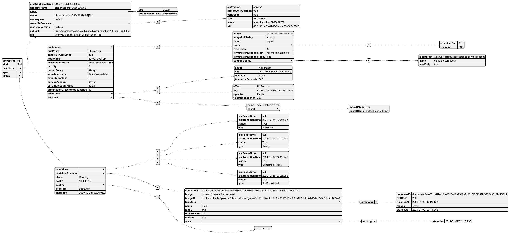

@startyaml
apiVersion: v1
kind: Pod
metadata:
creationTimestamp: "2020-12-25T00:26:06Z"
generateName: blazorindocker-7966669766-
labels:
app: blazor
pod-template-hash: "7966669766"
name: blazorindocker-7966669766-9j2bk
namespace: default
ownerReferences:
- apiVersion: apps/v1
blockOwnerDeletion: true
controller: true
kind: ReplicaSet
name: blazorindocker-7966669766
uid: dfb3148b-cff3-42d5-8ac4-e55e3d5450d7
resourceVersion: "941757"
selfLink: /api/v1/namespaces/default/pods/blazorindocker-7966669766-9j2bk
uid: 7cb40e09-eb3f-4a34-b12e-b6ec84441fdb
spec:
containers:
- image: piotrzan/blazorindocker
imagePullPolicy: Always
name: nginx
ports:
- containerPort: 80
protocol: TCP
resources: {}
terminationMessagePath: /dev/termination-log
terminationMessagePolicy: File
volumeMounts:
- mountPath: /var/run/secrets/kubernetes.io/serviceaccount
name: default-token-826vh
readOnly: true
dnsPolicy: ClusterFirst
enableServiceLinks: true
nodeName: docker-desktop
preemptionPolicy: PreemptLowerPriority
priority: 0
restartPolicy: Always
schedulerName: default-scheduler
securityContext: {}
serviceAccount: default
serviceAccountName: default
terminationGracePeriodSeconds: 30
tolerations:
- effect: NoExecute
key: node.kubernetes.io/not-ready
operator: Exists
tolerationSeconds: 300
- effect: NoExecute
key: node.kubernetes.io/unreachable
operator: Exists
tolerationSeconds: 300
volumes:
- name: default-token-826vh
secret:
defaultMode: 420
secretName: default-token-826vh
status:
conditions:
- lastProbeTime: null
lastTransitionTime: "2020-12-25T00:26:06Z"
status: "True"
type: Initialized
- lastProbeTime: null
lastTransitionTime: "2021-01-02T12:26:24Z"
status: "True"
type: Ready
- lastProbeTime: null
lastTransitionTime: "2021-01-02T12:26:24Z"
status: "True"
type: ContainersReady
- lastProbeTime: null
lastTransitionTime: "2020-12-25T00:26:06Z"
status: "True"
type: PodScheduled
containerStatuses:
- containerID: docker://7a968933232bc39d4d10d5106976ee720e57971df50da9b71ab9403f196261fc
image: piotrzan/blazorindocker:latest
imageID: docker-pullable://piotrzan/blazorindocker@sha256:d1f1174d0fddd9d490ff1615a699bb47f38cf05f4ef1d217a5c31f1711772e9c
lastState:
terminated:
containerID: docker://4c8e0a7ccd42ba13b695b3412b9399a91d61fdfbf4659bf3909ea6192c15f0b7
exitCode: 255
finishedAt: "2021-01-02T12:26:12Z"
reason: Error
startedAt: "2021-01-02T00:19:04Z"
name: nginx
ready: true
restartCount: 11
started: true
state:
running:
startedAt: "2021-01-02T12:26:23Z"
phase: Running
podIP: 10.1.1.215
podIPs:
- ip: 10.1.1.215
qosClass: BestEffort
startTime: "2020-12-25T00:26:06Z"
@endyaml